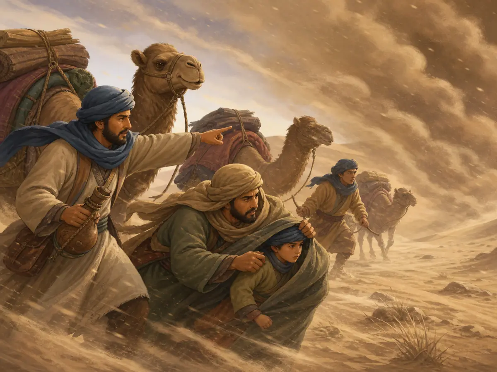

丝绸之路：一条连接世界的彩带
The Silk Road: Not One Road, but Many
Page 1
一条看不见的路
A Name for a Network

The Silk Road was a network of routes, not one single road.
"丝绸之路"这个名字，听起来像一条用丝绸铺的大路。
其实不是。丝绸之路上没有丝绸铺的路面。路是沙子、石头、雪和草地。但在这条路上，来往最多的货物是丝绸-所以后人给它起了这个美丽的名字。
而且，"丝绸之路"不是一条路。它像一棵大树的树根，从中国伸出去，分成好多条岔路，穿过沙漠，翻过雪山，最终到达了很远的西方。
The name "Silk Road" sounds like one big road paved with silk.
But it was not like that at all. No one walked on a road made of silk. The road was made of sand, stones, snow, and grass. Still, silk was one of the goods that traveled on it most often, so later people gave it this beautiful name.
And the Silk Road was not one road. It was like the roots of a great tree, stretching out from China, splitting into many branches, crossing deserts, climbing over snowy mountains, and finally reaching the far west.
Page 2
张骞-把路走开的人
Zhang Qian

Zhang Qian helped make distant western lands better known to the Han world.
两千多年前的汉朝，有一个人叫张骞。
当时的皇帝派他去一个很远的地方，叫"西域"-就是今天的新疆和中亚一带。张骞带着一百多人出发了。他们没想到，这一走就是十三年。
路上，张骞被匈奴人抓走了。匈奴人不让他走，逼他娶了匈奴的妻子，在那儿住了十年。十年后，张骞找了个机会逃跑了。他没有往回跑，而是继续往前走-往西走。
他走过沙漠，翻过雪山，到了今天的中亚国家。他看到了从来没见过的东西：高大的骏马、亮晶晶的玻璃、从来没吃过的水果-葡萄和石榴。当地的人也从来没见过汉朝人，对他很好奇。
张骞终于回到了汉朝，把一路上的见闻告诉了皇帝。从此，汉朝知道了：在遥远的西方，还有那么精彩的世界。
张骞没有一个人造出丝绸之路，但他确实把很多人原本不熟悉的那条路，走得更开了。
More than two thousand years ago, in the Han dynasty, there was a man named Zhang Qian.
The emperor sent him to a faraway place called the Western Regions - around today's Xinjiang and Central Asia. Zhang Qian set out with more than one hundred people. They did not know that this journey would last thirteen years.
On the road, Zhang Qian was captured by the Xiongnu. They would not let him leave. They forced him to take a Xiongnu wife and live there for ten years. Ten years later, he found a chance to escape. But he did not run back home. He kept going west.
He crossed deserts and climbed over snowy mountains until he reached lands in Central Asia. There he saw things he had never seen before: tall fine horses, shining glass, and fruits he had never tasted, like grapes and pomegranates. The local people had never seen a Han man before, and they were curious about him too.
At last Zhang Qian returned to the Han court and told the emperor everything he had seen. From then on, the Han dynasty knew that far to the west there was another wonderful world.
Zhang Qian did not create the Silk Road all by himself, but he did help open that road wider for many people who had not known it before.
Page 3
从东方到西方的货物
Goods in Motion

Goods moved in stages, passing from trader to trader.
丝绸之路上的"明星"货物，就是丝绸。
当时的罗马人第一次摸到丝绸的时候，常常会惊叹。这种布太轻、太滑、太亮了。穿在身上，像披着流水一样。关于它多么贵，后来也留下了很多夸张又有趣的说法。
问题是，罗马人不知道丝绸是怎么做出来的。有人猜是树上结的，有人猜是地上长的。养蚕和缫丝的技术在很长时间里都被看得非常重要，也因此更显得神秘。
丝绸之路上的商人，从来不走全程。他们是一段一段地接力：汉朝的商人把丝绸运到西域，西域的商人接手再往西运，中亚的商人再接手……像传接力棒一样。
从中国运出去的东西，除了丝绸，还有瓷器、茶叶、漆器、铁器。很多西方人，就是通过这些东西，第一次知道了中国。
The star product on the Silk Road was silk.
When Romans first touched silk, many of them were amazed. The cloth was so light, so smooth, so bright. Wearing it felt like wrapping yourself in flowing water. Later, many exaggerated and funny stories were told about how expensive it was.
The problem was that the Romans did not know how silk was made. Some guessed it grew on trees. Some guessed it grew out of the ground. For a long time, the skills of raising silkworms and making silk thread were treated as very important secrets, and that made silk seem even more mysterious.
Merchants on the Silk Road did not travel the whole distance by themselves. They passed goods on in stages. A Han merchant might carry silk to the Western Regions. Then a merchant there would take it farther west. Then a Central Asian merchant would take it farther still. It worked like a relay race.
Besides silk, traders from China also carried out porcelain, tea, lacquerware, and iron goods. For many people in the West, these things were their first introduction to China.
Page 4
不只是做买卖
More Than Trade

Along these routes traveled not just goods, but also books, beliefs, and ideas.
丝绸之路运的不只是货物，还有看不见的东西。
佛教是从印度通过丝绸之路传到中国的。唐朝的时候，有一个叫玄奘的和尚，一个人沿着丝绸之路，走到了印度去取佛经。他走了十七年，回来的时候带回了六百多卷经书。
中国发明的造纸术，也是沿着这条交流网络，一步一步传到了阿拉伯，再传到欧洲。还有很多技术和知识，也是在这样的往来里慢慢传播开的。
艺术、音乐，甚至食物-中国人从西域学会了怎么做烧饼和面条，西域人从中国学会了怎么做丝绸和瓷器。丝绸之路，不只是商人的路，也是思想和文化的路。
The Silk Road carried more than goods. It also carried things you could not hold in your hand.
Buddhism came from India to China through the Silk Road. In the Tang dynasty, a monk named Xuanzang traveled alone along this road all the way to India to bring back Buddhist scriptures. He was gone for seventeen years, and when he returned, he brought back more than six hundred scrolls.
China's papermaking also moved step by step along this network of exchange, first to the Arab world and then to Europe. Many other skills and kinds of knowledge spread in the same way.
Art, music, and even food traveled too. Chinese people learned from the Western Regions how to make flatbread and noodles. People in the Western Regions learned from China about silk and porcelain. So the Silk Road was more than a merchant road. It was also a road for ideas and culture.
Page 5
沙漠里的路
Hard Travel

In the desert, caravans feared sandstorms and depended on water and companions.
走丝绸之路，不是一件轻松的事。
商人骑着骆驼，走在没有尽头的沙漠里。白天太阳晒得皮肤发烫，晚上又冷得要裹紧厚厚的毯子。最怕的是沙尘暴-大风一起，满天的沙子什么都看不见，骆驼会把头埋进沙子里，人只能蹲着等风暴过去。
有时候还会遇到强盗。所以商人们从来不一个人走。他们几十个人、上百匹骆驼组成一支队伍，叫"骆驼队"或"商队"。大家互相照应，一起穿过危险的沙漠。
沙漠里最重要的东西不是丝绸，是水。每一个商队出发前，要算好下一个绿洲有多远。错过了绿洲，会渴死在沙漠里。
Traveling on the Silk Road was not easy.
Merchants rode camels across endless deserts. In the daytime, the sun burned their skin. At night, it became so cold that they had to wrap themselves in thick blankets. The most frightening thing was a sandstorm. Once the wind rose, sand filled the sky and you could not see anything. Camels buried their heads, and people could only crouch down and wait for the storm to pass.
Sometimes there were bandits too. That is why merchants never traveled alone. Dozens of people and hundreds of camels formed one team, called a camel caravan. Everyone looked after one another as they crossed the dangerous desert together.
In the desert, the most important thing was not silk. It was water. Before setting out, every caravan had to figure out how far away the next oasis was. If they missed the oasis, they could die of thirst in the desert.
小结
Summary
张骞推开了一扇门，让中国看到了西方，让西方看到了中国。
丝绸之路不只运了丝绸、瓷器、葡萄和宝马。它还运了佛教，运了造纸术，运了音乐和美术。中国、印度、波斯、地中海世界的许多地方，就这样被这条路慢慢连在了一起。
下一次你吃葡萄，或者穿一件丝绸衬衫的时候，想一想：几千年前，这些好东西就是跟着骆驼队，摇摇晃晃地穿过沙漠，才来到你面前。
Zhang Qian pushed open a door. He helped China see the West, and helped the West see China.
The Silk Road did not carry only silk, porcelain, grapes, and fine horses. It also carried Buddhism, papermaking, music, and art. In this way, places in China, India, Persia, and the Mediterranean world were slowly linked together.
The next time you eat grapes or wear a silk shirt, think about this: things like these once swayed across the desert with camel caravans before they finally reached people far away.